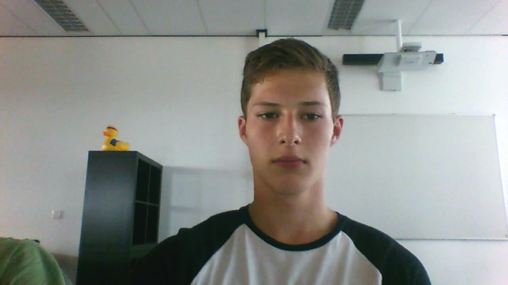
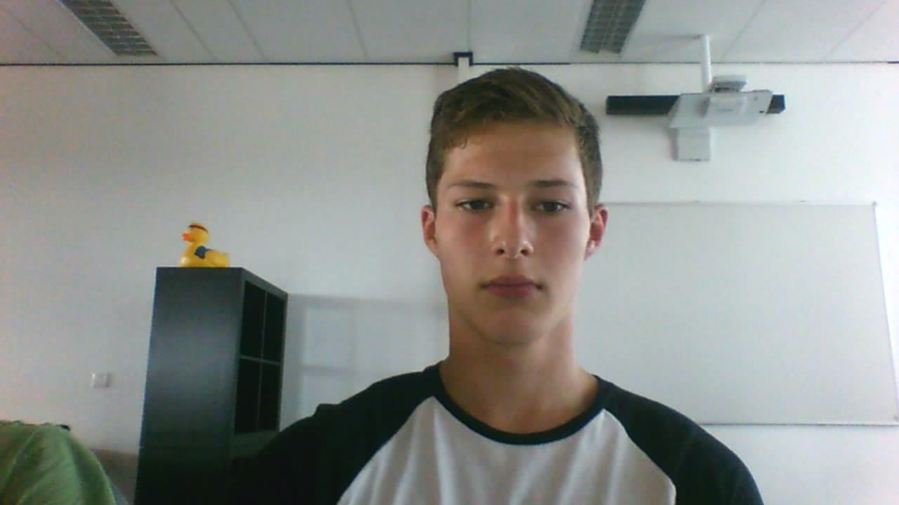

Mijn Portfolio
Zoals de titel al zegt dit portfolio gaat over mij, Erick Kok. Ik ben op het moment 17 jaar en ik woon in het boerendorpje Wijngaarden.
Zoals de titel al zegt dit portfolio gaat over mij, Erick Kok. Ik ben op het moment 17 jaar en ik woon in het boerendorpje Wijngaarden.
